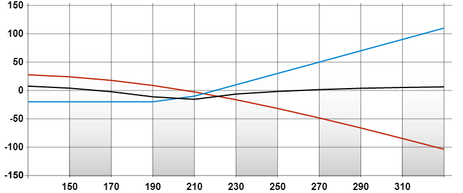

沽出跨期认购期权
返回| 策略 |
|---|
| 沽出跨期认购期权 |
| 成份 |
| 沽出远期月份认购期权，并买入近期月份而相同行使价/水平的认购期权 |
| 潜在盈利 |
| 只限于已收取的期权金净额 |
| 最大亏损 |
|
| 时间值影响 |
| 负面 |
| 备注 |
| 跨期认购期权短仓和跨期认沽期权短仓的特性大致相似，主要不同的地方为可收取的期权金净额数目，而数目的大小取决于行使价/水平的高低。此外，此策略或许需要缴付按金，而所持短仓亦有机会在到期日前被行使。 |
例子
盈 余/ 亏 损 |
 |
|---|---|
| 正股价格 | |
|
| |
| 成份 |
|---|
| 沽出「ABC三月200元认购」，收取 30元，并买入「ABC一月200元认购」，付出 20元 |
| 期权金净额 |
| 收取 30元 – 20元 = 10元 |
| 录得盈利 |
| 当正股价在近期月份之到期时远离于 200元 |
| 潜在盈利 |
| 10元 |
| 潜在亏损 |
| 一月份认购期权的时间值亏损减去三月份认购期权的时间值亏损 |
| 时间值影响 |
| 负面 |